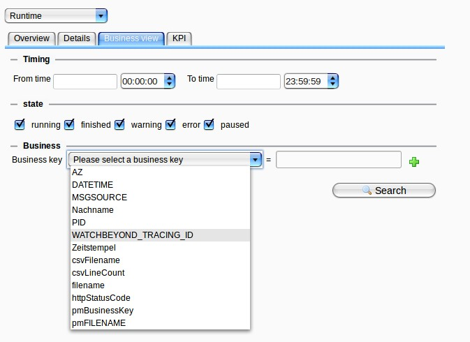

Business View

Topic content
In order to use this view, you have to define business keys. The explanation, how to do that, can be found here: Define Business keys in a process model
The view looks like in the following figure.

In the upper part, you can define the time span in which you want to search for the business keys. If you let the fields empty, as shown above, there is no time restriction for the search. Furthermore, you can select all the states from the processes where you want to search for the business keys. Tick all the states that you want to search.
Then you can select the business key you are interested in. The search is scenario overlapping, that means if you define a business key with the same name in different scenarios, all these scenarios are shown here as an output if the value matches. So the name of the business key is the important thing here. Wildcards for the value field are "%" and "*".
It is also possible to search for more than one business key. Click on the green "+"-button on the right to add a statement. You can connect the two statements either with "AND" or with "OR".